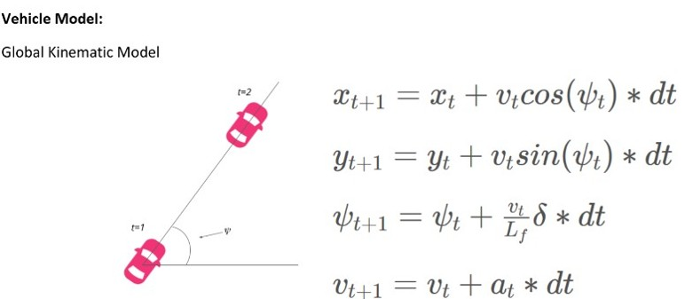

Nikola Chassis Controls
Contributed to the development of Class 8 Battery Electric Vehicles (BEV) and Fuel Cell Electric Vehicles (FCEV) at Nikola, encompassing several key areas:
- Defined system architecture and software requirements for a greenfield BLE TPMS, Electric Park Brake Interlock and Air E-Compressor.
- Developed a modular Simulink framework for Chassis Controls with multi-rate subsystems and a scheduler for a pilot concept.
- Led the integration and release of the Crash Management System, and Tire Pressure Monitoring System (TPMS), resolving communication bugs and optimizing RF antenna placement for reliable performance.
- Developed and validated system level testing procedures
- Introduced a new low-voltage pyrofuse on the truck for High Voltage and Hydrogen post-Crash Safety, driving changes across electrical and mechanical domains, and reducing BOM costs significantly.
- Developed safety case documentation for multiple features
Technologies Used: JAMA, JIRA, Matlab, Simulink, C, CANalyzer, CAPL, BLE, J1939, ISO26262, 3DX Catia V6
Company: Nikola Corporation

ZF Brake Controls
Designed, implemented, and validated algorithms for integrated brake control systems (IBC) for various vehicle platforms across multiple generations, encompassing:
- Feedforward and feedback controller design for pressure-to-motor request.
- Gain scheduling to ensure stability across operating conditions.
- Kalman filter implementation for reference interpolation, improving smoothness.
- System identification via chirp frequency excitation to estimate robustness margins
- ABS valve controllability mapping and calibrations.
Developed hydraulic actuation & diagnostic algorithms for both production release & for advanced engineering for brake control features including Boosted Service Brakes, ABS, Electronic Stability Control & Adaptive Cruise Control applications.
Contributed to Model-in-loop, Software-in-loop, and Hardware-in-loop testing with dSpace & CANape for algorithm verification and calibration.
Technologies Used: C, Simulink, Stateflow, TargetLink, CANalyzer, CANape, AMESim
Company: ZF Active Safety

4-DOF Robotic Arm
Designed, 3D printed, and controlled a 4-DOF robotic arm. This project involved:
- Utilizing Adafruit servo motors for precise joint control.
- Implementing forward and inverse kinematics using Denavit-Hartenberg parameters for accurate positioning.
- Developing a PID controller to provide accurate and stable position control, ensuring smooth and responsive movements.
- Controlling the arm via a Raspberry Pi, enabling flexibility and extensibility of the control system using I2C communication.
Code is available here.
Technologies Used: 3D Printing, Raspberry Pi, Python, I2C, PID control, Adafruit Servo Motors, Denavit-Hartenberg Parameters
Project Type: Self Initiated

Quadrotor Gripper Design
This project involved the design, fabrication, and testing of a motorized gripper for a quadrotor to perch on a rod. The gripper mechanism utilizes a four-bar linkage and a gear ratio to achieve a high mechanical advantage, maximizing gripping force.
More details here
Key features include:
- Two design iterations to improve performance and durability.
- 3D-printed components using Zortrax printers.
- Ribbed rubber lining for enhanced friction.
- Bronze bushings to improve gear stability.
- Achieved a maximum gripping torque of 3.3 N·m.
Testing explored different capture configurations, and the results provided valuable insights for further design enhancements. The final gripper design successfully met the project requirements.
Technologies Used: 3D Printing, Solidworks, Kinematic Analysis
Course: University of Michigan


Model Predictive Control
Implemented a Model Predictive Controller to calculate steering and throttle inputs for a simulated vehicle to track waypoints closely. Code here
Technologies Used: C++, MPC
Course: Udacity Self Driving Car Nanodegree
Sensor Fusion
Developed sensor fusion algorithms (Extended and Unscented Kalman filters) for Lidar and Radar sensors to estimate the state of pedestrians in the vicinity of an autonomous vehicle. Code here
Technologies Used: C++, Lidar, Radar, Kalman Filters
Course: Udacity Self Driving Car Nanodegree
PMSM Field Oriented Control
Implemented Field Oriented Control (FOC) for a Permanent Magnet Synchronous Motor (PMSM) using dSpace.
Technologies Used: dSpace, PMSM Motor Control, Field Oriented Control (FOC)
Course: University of Michigan